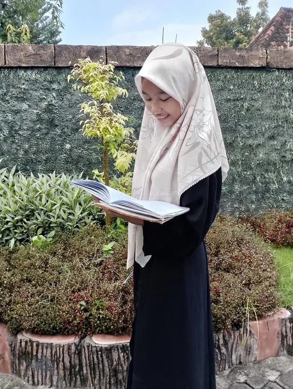

Alumni Berprestasi di Berbagai Universitas
Pesantren seringkali dipandang sebelah mata dalam hal akademik formal. Namun, PP Miftahul Huda Kalanganyar membuktikan bahwa pandangan tersebut keliru. Beberapa alumni pesantren ini telah berhasil diterima di universitas-universitas negeri ternama di Indonesia melalui jalur seleksi yang sangat kompetitif.
Berikut adalah profil beberapa alumni berprestasi yang telah mengharumkan nama pesantren di dunia pendidikan tinggi:
M. Ridho Al-Mahbub — Universitas Brawijaya
Ridho diterima di Fakultas Peternakan Universitas Brawijaya (UB) Malang melalui jalur SNBP. Selama mondok di PP Miftahul Huda, ia tidak hanya menguasai ilmu agama tetapi juga meraih nilai akademik yang tinggi di madrasah. Keberhasilannya membuktikan bahwa santri yang seimbang antara pendidikan agama dan akademik mampu bersaing di level nasional.
M. Maslukh Alfanani — Universitas Negeri Malang
Maslukh berhasil diterima di Jurusan Pendidikan Bahasa Inggris Universitas Negeri Malang (UM). Kemampuan bahasa Inggrisnya diasah selama bertahun-tahun di program bahasa pesantren, yang terbukti menjadi fondasi kuat untuk studinya di universitas. Kini ia aktif sebagai English tutor dan mentor bagi adik-adik kelasnya.
Khasby Assidiq — UPN Veteran Surabaya
Khasby diterima di UPN Veteran Jawa Timur Surabaya. Kemandirian dan disiplin yang ditempa selama bertahun-tahun di pesantren menjadi bekal utamanya dalam menjalani kehidupan perkuliahan. Ia aktif di berbagai organisasi kampus dan sering berbagi pengalaman tentang manfaat mondok kepada mahasiswa lainnya.
Kunci Keberhasilan Alumni Pesantren
Ada beberapa faktor yang menjadikan alumni pesantren mampu bersaing di perguruan tinggi:
- Kemandirian: Kehidupan di pesantren melatih santri untuk mandiri dalam segala hal, termasuk belajar. Kemandirian ini menjadi modal utama di dunia perkuliahan.
- Disiplin waktu: Jadwal pesantren yang ketat membentuk kemampuan manajemen waktu yang baik, sangat penting untuk menyelesaikan tugas-tugas akademik di universitas.
- Kemampuan bahasa: Program bilingual (Arab-Inggris) di pesantren memberikan keunggulan kompetitif, terutama dalam mengakses literatur akademik internasional.
- Mental tangguh: Kehidupan pesantren yang penuh tantangan membentuk mental yang kuat untuk menghadapi tekanan akademik di perguruan tinggi.
- Jaringan alumni: Ikatan persaudaraan alumni pesantren menjadi support system yang kuat di lingkungan kampus yang baru.
"Pesantren mengajarkan saya bahwa keberhasilan bukan hanya tentang kecerdasan, tetapi tentang istiqomah, kesabaran, dan doa. Nilai-nilai ini yang membawa saya hingga diterima di universitas impian." — Alumni PP Miftahul Huda
Program Persiapan Ujian Masuk PT
PP Miftahul Huda Kalanganyar memberikan pendampingan khusus bagi santri kelas akhir yang akan melanjutkan ke perguruan tinggi. Program ini meliputi bimbingan belajar intensif, simulasi ujian UTBK/SNBT, dan konsultasi pemilihan jurusan. Pesantren berkomitmen untuk memastikan setiap santri memiliki peluang terbaik untuk masa depannya.
Hubungi kami di WhatsApp +62 813-3205-2559 untuk informasi pendaftaran.
Ikuti Kami di Media Sosial